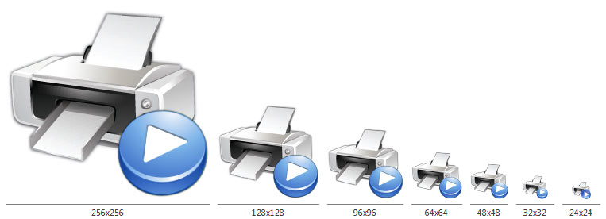
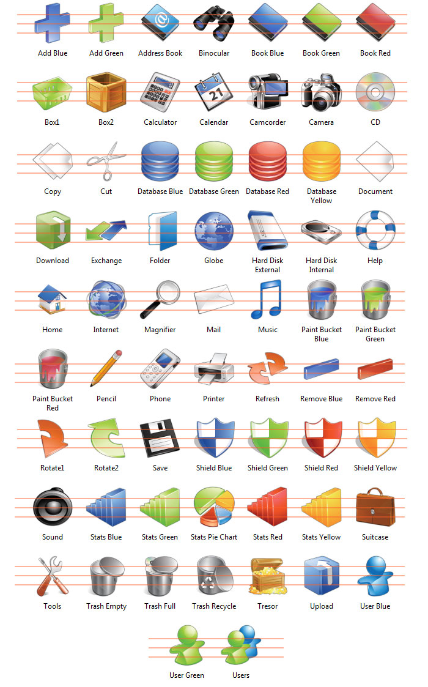
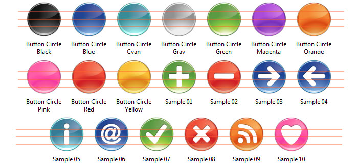
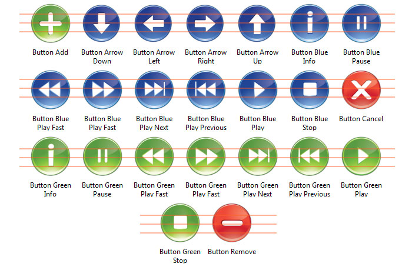
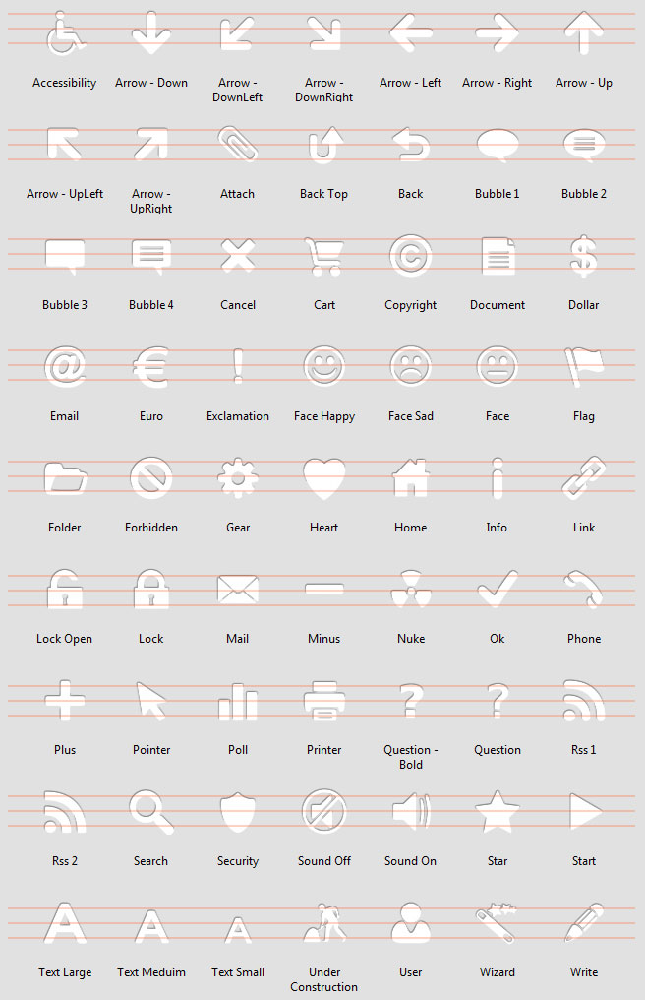
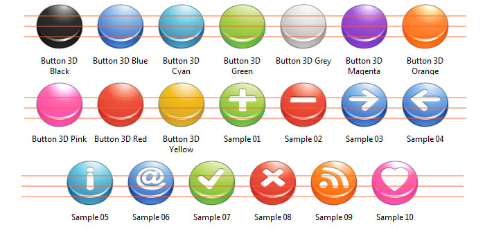
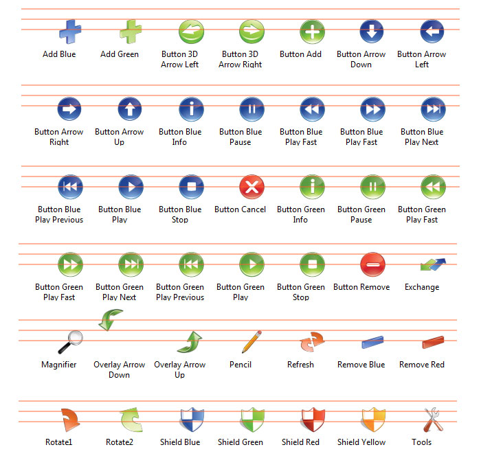

"Bright" Image Object Pack for Icons
Object Pack for IconWorkshop
Copyright ©2009 IconEden - Axialis Exclusive Distribution
 Description
Description
Bright Image Object Pack is composed of 296 objects (read more about objects) which permit creating hi-quality icons in sizes up to 256x256. Using drag & drop, you can create icons by associating basic objects and action overlays. The style is realistic and professional which make them suitable for commercial applications or websites.
Below is an example of an icon set which can be done in a few minutes using this pack:
The pack permits creating application icons in sizes 16x16 to 256x256 as required in modern applications compatible with Windows Vista multi-DPI capabilities. Axialis IconWorkshop creates all the required image formats in a few clicks:

 License Agreement
License Agreement
All the object remains properties of IconEden. You can use them royalty-free to create icons and use them in personal and commercial projects as long as you respect the terms of the User License Agreement.
The pack is based on an icon set by IconEden. Located in Viet Nam, this company offers graphic design services for icons, skins, logos, websites. If you need additional custom icons in the same style, we recommend that you contact the team for a quote.
 Contents of the Pack
Contents of the Pack
The pack contains 296 image objects. Objects are provided in 256x256 resolution in order to permit hi-quality downscaling in all sizes. Here is the list of objects included in the pack (red lines have been added for copyright reasons).
Folder "Objects"

Folder "Buttons 2D"

Folder "Buttons 2D/Styled"

Folder "Buttons 2D/Symbols"

Folder "Buttons 3D"

Folder "Buttons 3D/Symbols"

Folder "Overlays"

 How to implement icons in toolbars?
How to implement icons in toolbars?
If you want to add icons in application toolbars, we don't recommend to make individual ICO files. It is possible but all the GUI SDK tools use filmstrips instead. A filmstrip is a large image containing all the icons placed side-by-side. Accepted file format is BMP (recent SDKs accept PNG also). Once the filmstrip is programatically loaded in the application GUI, the toolbars and menus are populated with the icons.
 Create a filmstrip for a toolbar
Create a filmstrip for a toolbar
We'll create a 32x32 RGB/A (32 BPP) filmstrip. Latest versions of the GUI SDKs such as MFC (version included in Visual C++ 2008 SP1 of Feature Pack) support toolbar icons in 32 BPP RGB with alpha channel. The alpha channel permits to create icons with smooth borders, shadows and transparency. This is the state-of-the art in professional icon creation. To create the icons, we'll use the objects included in pack "Bright".
1. Choose File > New > Filmstrip for Toolbar or press Ctrl+T. A Dialog box opens, choose "RGB/A with Alpha Channel" and "32x32" in size of images. Specify also the number of images you wish to add in the filmstrip, 8 for example.
2. The new document is created. At the top of the window is displayed a list containing 8 blank entries. You can select the images to edit in this list. Using this feature you'll be able to edit each image separately (even if they share the same bitmap). IconWorkshop separes them virtually to help you working on the filmstrip.
3. Select the first image in the list "Image 0". Note that image numbers start at 0 to match the way they're handled in source codes. Make sure the Librarian is displayed and the object pack folder is selected. Select subfolder "Objects".
4. Let's create our first icon: A 3D red cancel button. In folder "Buttons 3D", select "Button 3D Red" and drag & drop it in the editor window. The object is added. In folder "Buttons 3D/Symbols", redo the same operation with "Cancel.png". The first icon is done!
5. Now this is a child's play: redo the same for the other icons using the various objects available in the list.
6. Note that you can change the order of the images in the list using drag & drop, copy images using Ctrl key or clipboard, add and remove images.
7. Once the toolbar filmstrip is finished, just save it by selecting the appropriate image format (BMP and PNG support RGB/A).
 Use the icons on your website
Use the icons on your website
If you want to add illustration icons on your website we recommend to create GIF images. Axialis IconWorkshop has been designed to open/save icon files (ICO, ICNS), but a useful feature permits exporting an image included in an icon to a GIF file with color optimization.
Follow this procedure to create a GIF image:
1. We'll create a 80x80 GIF image for inclusion in a web page with a white background (the color of the background is important to create an image with a smooth border). Create a new 80x80 with RGB/A icon: Choose File/New/Windows Icon. In the dialog box select RGB/A and 80x80, click OK. An icon is created with a new 80x80 image.
2. Create your illustration icon by using image objects from the Librarian (read more about objects).
3. Once the icon is done, choose File/Export/Compuserve GIF.
4. A dialog box opens. For a standard GIF, select Colors = "Auto", Palette = "Adaptive", Dither = "Diffusion". In Transparency, we recommend to select "Preserve Transparency".
5. Threshold and Matte are the important settings to make a professional GIF image. First, select in Matte the approximate color of the page background where the icon will be displayed. As the GIF format does not support smooth transparency, this will limit the "halo" and "aliasing" effect around the icon. In Threshold, adjust the level of the transparency frontier around the icon. You see the preview in the box below while you adjust the slider. We recommend to adjust it arround 25% for good results.
6. When done, click OK. Select the location and filename of the GIF file to create.
7. You're done! Now include the illustration image in your HTML page.
Enjoy :)